坚持创新, 帮助所有人圆梦起航；
助力学生成长, 让学生满意和自豪；
营造良好的科研氛围, 使研究人员以最佳状态投入科研。
开启美好的未来,
国立忠北大学。
国立忠北大学是一所自豪的, 信心满满的大学。
虽然学校的各种就业扶持项目和奖学金政策为我提供了很大的支持, 但对我最有益的莫过于“终身师生制”。我的指导教授在学业和职业规划上的引导对我产生了深远的影响。通过不断了解自己, 发掘自身优势, 并根据社会需求调整职业理想, 我充满信心在毕业后朝着自己的梦想勇敢前行。我将秉持正直诚实、光明磊落的品德, 关心邻里和集体, 努力成为一个充满活力和热情的人。
- 护理专业20届学生 安弘慈
成功的就业以及创业支援体系
● 施行Gap-Zero自主就业项目
“无缝衔接”
自主就业计划,
助力成功就业
● 大学就业中心
● 通过整合创业扶持部门, 为各发展阶段提供个性化支持
● 实施创业人才发掘项目, 为韩国式I-Corps提供咨询服务
助力学生发展, 培养创新人才
- 第1
-
教育教学活动支出占学费收
入的比例位居重点国立大学第一
(2022《中央日报》排名)
- 次88,108
-
从入学到就业, 实行与指导教授同行的终身师生制
• 共20,609名学生参与
• 共进行88,108次辅导(2020-2022学年)
- 第2
-
奖学金支出占学费收入的比例位居重点国立大学第二
(2022《中央日报》排名)• 人均学费427万韩元/年
• 人均奖学金299万韩元/年(覆盖率86%)
- 4,121名
-
运营5个学生生活馆, 共可容纳4,121名学生
• 60%名额优先分配给新生
• BTL新建项目第四期(五松, 26年入住)
国立忠北大学以挑战和创新为核心, 致力于培养全球领先的科研竞争力。
我们追求富有挑战性的科研知识, 以解决社会和人类所面临的问题。作为一个以科研为中心的大学, 我们正在建立创新性十足的科研生态系统, 以提升我们的全球竞争力。此外, 我们还致力于构建韩国最出色的“管理 产 学 研“平台, 与区域产业共同发展, 传播国立忠北大学的价值。
- 研究处长李準洙(食品生命工程专业)
科研及产学合作成果 (大学信息公示 2021-2023)
- 论文成果
-
韩国国内 894.96篇
国际(SCI级别学术期刊) 853.84篇
- 研究课题及研究经费总额
-
3,129个
2,818亿韩元
- 技术转移成果
-
580件
68亿韩元
- 专利申请及注册成果
-
韩国国内:申请 884项 / 注册 560项
海外:申请 102项 / 注册 17项
第1
教师人均技术转让收入位居重点国立大学第一
教师人均专利注册数量位居重点国立大学第一
世界级研究室
-
人工智能系统半导体融合研究中心
培养可进化的未来型多芯片模块人工智能半导体设计及专业研究员
项目负责人 | 电子工程系金亨源教授
-
肿瘤疾病网络研究中心
与韩国生命工学研究院、基因组研究财团、美国斯坦利研究所、美国国立癌症研究中心、英国伦敦大学等合作研究疑难杂症及肿瘤疾病的病理机制
项目负责人 | 药学院洪镇泰教授
-
重症肺病研究中心
将肺部疾病的基础发病机制与R&D研究相结合
项目负责人 | 医学院金应国教授
-
公共研究成果及价值产出技术培养事业团
利用Aptamer-Exosome核心源泉技术, 开发血管性痴呆诊断等产品, 促进忠北新成长生物产业发展
项目负责人 | 微生物学专业安志英教授
-
宠物转化医学癌症中心
作为科学技术及ICT国际化事业的一环, 利用宠物转化医学构建精密医疗平台
项目负责人 | 兽医专业崔庆哲教授
国立忠北大学积极引领和推动可持续发展的地方社会。
在过去的七十多年里, 我们一直领导并推动着区域社会的教育和发展, 而我们的二十万名校友为这段历史留下了深刻的贡献。为了迎接数字时代的挑战, 我们正在通过面向未来的教育平台进行创新, 并发挥引领可持续发展社会的先锋作用。此外, 我们还致力于培养具有公共意识的领袖, 关心身边人的痛苦和困难, 并积极解决社会问题。我将继续全力支持国立忠北大学与区域社会的协同发展。
- SK海力士副社长李日雨(经营专业90届)
加强以新技术、尖端技术领域为核心的教育课程
● 开设尖端领域专业
- • 智能机器人工程学专业
- • 未来汽车工程学专业
- • 制药生物专业
- • 化妆品产业专业
- • 天然材料专业
- • 放射光融合专业
● 开设融合专业(共30个)
- • 智慧工厂
- • 智慧城市
- • 智慧电力IT
- • 智能设计
- • 知识产权智能融合
- • 未来汽车系统
- • 自动驾驶环保汽车
- • 二次电池融合
- • 半导体原材料配件设备
- • 半导体电路元件系统等
运营面向未来的教育系统
-
1
运营全面素质教育体系Residential College,
培育公共价值观 -
2
推行学生设计专业制度,
让学生自主规划和设计教育课程(2023年7个专业) -
3
引进可在多个专业领域修读的
微专业课程(Micro Degree等) -
4
实行课内外综合管理体系CIEAT,
为学生提供个性化指导
践行志愿服务与分享活动 志愿服务活动详情(近3年)
国立忠北大学的目标是培养跨国境的全球精英,与世界携手并进。
怀着对清州的好奇和对天文宇宙知识的渴求, 我有幸成为韩国政府邀请奖学金(GKS)学生, 选择了国立忠北大学作为我的学府。在韩国政府提供的全额奖学金的支持下, 我能够专注于学业, 并通过学校提供的多种文化体验项目和“全球支持者”活动, 进一步加深了对韩国的了解。尤其令我难以忘怀的是, 我可以与其他外国留学生的“学伴(BESTIE)”们一同参加各种活动, 充分享受我的大学生活。国立忠北大学带我进入了一个崭新的世界, 我深爱着这所学府。
- 天文宇宙专业22届学生 Els, Bianca
国际交流项目
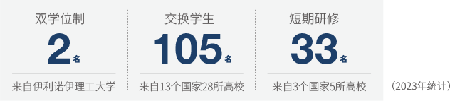- 开设外语讲座(IILE)
- 通过各种外语讲座为大学成员及区域社会提供优质的外语教育机会
- 留学生支援中心(ISSC)
- 通过为留学生提供从入学到安居再到毕业的系统化支持, 使其获得完美的留学体验
- 韩国政府主办外国人奖学金(GKS)项目
- 通过韩国政府主办的全额奖学金项目, 培育全球人才
- 派遣及引进交换学生项目
- 通过与海外大学的学生交流, 提供全球研修机会
- 韩语研修课程(KLP)
- 为学生提供在韩留学所需的韩语能力及文化体验机会
- 社会统筹项目课程(KIIP)
-
受韩国法务部委托, 专门负责忠北地区的移民教育
(每年约开设100多期课程, 参与学生数多达1,200名)
国立忠北大学积极推动研究, 旨在通过不断探索, 为人类社会带来福祉。
我的研究目标是开发对每个人都有用的技术, 以造福未来社会。同时, 我们也致力于向学生介绍最新的技术趋势和IT技能, 培养他们成为引领第四次工业革命的人才。创造社会福祉和未来价值一直是我们不断投身新研究的动力。
- 金珉玖副教授
-
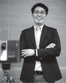
研究人员姓名 |
建筑工程专业 金珉玖副教授论文名称 | Registration-Free Point Cloud Generation Technique Using Rotating Mirrors
刊载学术期刊名称 | COMPUTER-AIDED CIVIL AND INFRASTRUCTURE ENGINEERING -
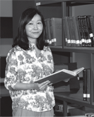
研究人员姓名 |
国际经营专业 朴炫貞教授论文名称 | Technology Readiness and Technology Paradox of Unmanned Convenience Store Users
刊载学术期刊名称 | JOURNAL OF RETAILING AND CONSUMER SERVICES -
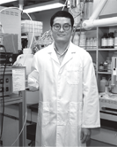
研究人员姓名 |
工业化学专业 趙重相副教授论文名称 | Porous Microspheres Comprising CoSe2 Nanorods Coated with N-Doped Graphitic C and Polydopamine-Derived C as Anodes for Long-Lived Na-Ion Batteries
刊载学术期刊名称 | NANO - MICRO LETTERS -
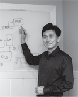
研究人员姓名 |
电子工程系 金亨垣教授Awards | Selected as Regional Leading Research Center
(AI SoC Convergence Research Center (AISRC))
Funded by | National Research Foundation of Korea -
研究人员姓名 |
医学专业 鄭惠元教授论文名称 | BNT162b2-Induced Memory T Cells Respond to the Omicron Variant with Preserved Functionality
刊载学术期刊名称 | NATURE MICROBIOLOGY -
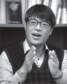
研究人员姓名 |
生物专业 金京煥副教授论文名称 | The Role of Histone Modifications: From Neurodevelopment to Neurodiseases
刊载学术期刊名称 | SIGNAL TRANSDUCTION AND TARGETED THERAPY -
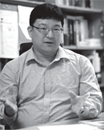
研究人员姓名 |
物理专业 金慶鎬副教授论文名称 | Efficient Photon Extraction in Top-Emission Organic Light-Emitting Devices Based on Ampicillin Microstructures
刊载学术期刊名称 | ADVANCED MATERIALS -
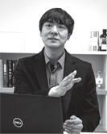
研究人员姓名 |
物理专业 姜鉉求助理教授论文名称 | Organic Anisotropic Excitonic Optical Nanoantennas
刊载学术期刊名称 | ADVANCED SCIENCE -
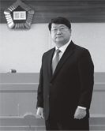
研究人员姓名 |
法学专业 崔善雄教授Awards | Recipient of the National Academy of Sciences (NAS) Awards in Social Sciences
Funded by | National Academy of Sciences, Republic of Korea -

研究人员姓名 |
电气工程系 權五珉教授论文名称 | Some Novel Results on Stability Analysis of Generalized Neural Networks with Time-Varying Delays via Augmented Approach
Awards | 2022年1月-10月累计论文
14篇, 平均JCR IF值最高4.596% / 数学及多个领域 : 连续6年世界前1% -
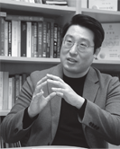
研究人员姓名 |
新材料工程专业 李東柱副教授论文名称 | Recent Progress in Low-Dimensional Nanomaterials Filled Multifunctional Metal Matrix Nanocomposites
刊载学术期刊名称 | PROGRESS IN MATERIALS SCIENCE -
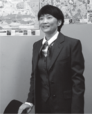
研究人员姓名 |
经营信息专业
Seo Dong-Back教授论文名称 | Comparing Factors Affecting Self-Disclosure Behavior Between German and South Korean SNS Users
刊载学术期刊名称 | TELEMATICS AND INFORMATICS -
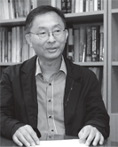
研究人员姓名 |
化学工程专业 金範洙教授论文名称 | Production of Polyhydroxyalkanoates and Astaxanthin from Lignocellulosic Biomass in High Cell Density Membrane Bioreactor
刊载学术期刊名称 | CHEMICAL ENGINEERING JOURNAL -
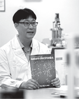
研究人员姓名 |
信息通信工程系 鄭在旭教授论文名称 | Wafer-Scale Alignment and Integration of Micro-Light-Emitting Diodes Using Engineered Van Der Waals Forces
刊载学术期刊名称 | NATURE ELECTRONICS